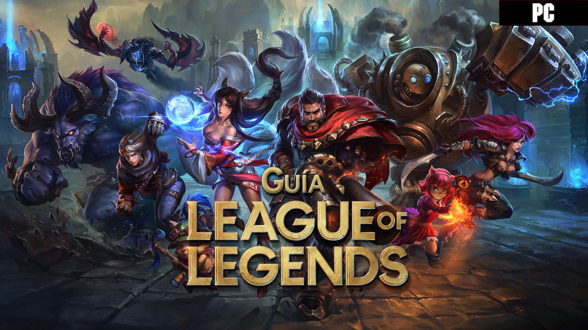

como ser mejor en league of legends
Guia de league of legends
Visitas:
farmeo control de waves
Galeria
galeria galeria2

Farmeo
¿Qué es farmear en League of Legends? Farmear refiere al acto repetitivo de asesinar súbditos del carril enemigo para poder recolectar oro y obtener experiencia.
Control de waves
El control de oleadas en League of Legends (LoL) es uno de los aspectos más importantes de la fase de líneas. Si podemos usar las oleadas a nuestro favor, podemos controlar en qué zonas tendrá que posicionarse el enemigo

Roles del league of legends
- Support
El soporte es un jugador que debe encargarse de reforzar y/o apoyar a sus compañeros de equipo mediante la utilidad brindada por sus bonificaciones, curaciones, escudos, inmovilizaciones a los enemigos y cualquier otro control de masas existente.
- AD Carry
El Attack Damage Carry (ADC) es uno de los jugadores principales del equipo y probablemente la mayor fuente de daño del mismo. Comúnmente es una posición jugada por campeones pertenecientes al rol del tirador como Caitlyn, Miss Fortune, Jhin, Samira, Tristana y otros personajes.
- Mid
Mid, del inglés middle, es un término que se utiliza para nombrar al carril central en League of Legends. Los midlaners suelen ser campeones tipo magos con una gran AP (Ability Power), que además tienen la función de apoyar en Top o Bottom.
- Jungla
Jungla o Jungler se considera una posición similar a ir a un carril pero que involucra matar a los "Monstruos" neutrales localizados en las zonas entre las líneas. Los Junglers se dedican a "farmear" los campamentos disponibles en la Jungla.
- Top
Es el carril superior de la grieta del invocador, donde suele encontrarse dos jugadores (uno de cada equipo). En esta línea se usan todo tipo de campeones, tanto tanques como campeones con daño, aunque por lo general son tanques que servirán como línea defensiva en las peleas de equipo.
Tipos de daño en league of legends
- AD
El AD es el daño que se produce por un ataque de ataque físico. Este daño se produce por la fuerza del ataque y la resistencia del objetivo.
- AP
El AP es el daño que se produce por un ataque de habilidad. Este daño se produce por la fuerza del ataque y la resistencia del objetivo.
- AD/AP
El AD/AP es el daño que se produce por un ataque de ataque físico y habilidad. Este daño se produce por la fuerza del ataque y la resistencia del objetivo.
- TRUE
El TRUE es el daño que se produce por un ataque de ataque físico, habilidad y true damage. Este daño se produce por la fuerza del ataque y la resistencia del objetivo.
links de interes
CONTROL DE WAVES
FARMEO
Descargar League of legends